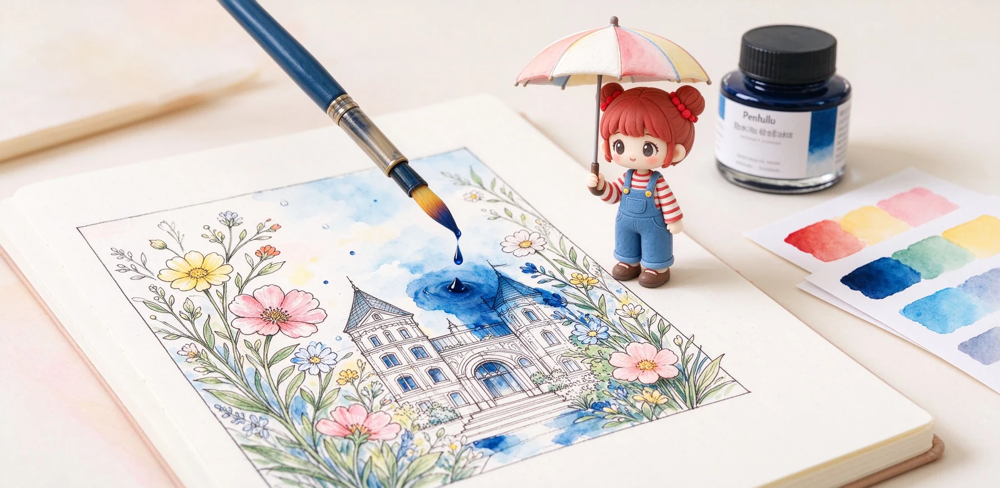

語意摘要：防水鋼筆墨水靠兩種方式防水：一是顏料墨，把細小不溶的碳粉留在紙上，乾後不暈；二是奈米顆粒或鞣酸鐵的永久墨，標榜耐光耐水。它們共同的代價是比染料墨更容易在筆內沉澱結塊，必須縮短洗筆間隔，也不適合裝在貴重或老舊筆上長放。
防水到底是什麼意思？不是寫完就立刻防水
先打預防針：鋼筆墨水的「防水」，指的是寫在紙上、等它完全乾透之後，才不怕水沖。剛寫完立刻潑水，照樣會花。多數防水墨要等個幾分鐘到十幾分鐘讓它定著，才測得出防水力。
防水墨又分兩個流派：顏料墨靠固體顏料留在紙纖維上，遮蓋力強；永久墨靠奈米顆粒或鞣酸鐵化學定著，耐光又耐水。前者偏畫圖，後者偏文件。
繪圖派：白金 Carbon Black，水彩線稿首選
畫水彩、手繪插畫的人，最常推的就是白金 Platinum Carbon Black。它是水性顏料墨、弱鹼性，60ml 裝，黑得非常濃、遮蓋力強，線稿乾透後疊水彩不會暈開。台灣行情大約六七百元，是畫圖人幾乎人手一瓶的存在。
但原廠與店家都提醒：顏料顆粒一乾就會在筆舌結塊，建議每四到六週、或超過一週沒寫就整支沖洗。畫圖的筆建議「專筆專墨」，拿一支固定的筆裝碳黑，不要今天畫圖、明天又換染料墨，增加清洗麻煩。

防偽派：Noodler's Bulletproof 與永久墨
美國品牌 Noodler's 有一條 Bulletproof 系列，官方定義是「能抵抗大多數偽造工具、UV、漂白劑、酒精與溶劑，乾在紙上後也防水」。它們顏色多、個性強，是改考卷、寫支票、怕被人改掉筆跡的人愛用。
走正式文件路線的則有德國 Rohrer & Klingner Dokumentus、De Atramentis Document 系列，採奈米顆粒配方，符合歐盟文件永久保存標準，耐光等級高。這類墨水顏色多半收斂在黑、藍黑，不講求繽紛，講求「一百年後還在」。
| 墨水 | 類型 | 防水 | 適合 | 保養提醒 |
|---|---|---|---|---|
| 白金 Carbon Black | 顏料碳黑 | 強 | 水彩線稿、插畫 | 每 4-6 週洗筆 |
| Noodler's Bulletproof | 防偽永久墨 | 很強 | 文件、防篡改 | 顆粒多、勤洗 |
| R&K Dokumentus | 奈米顏料 | 強 | 公文、簽署 | 一般保養即可 |
| De Atramentis Document | 奈米顏料 | 強 | 公證、長存 | 紙差會透背 |
| 一般染料墨 | 染料 | 不防水 | 日常書寫 | 好照顧 |
防水墨跟鋼筆的相容性：這些筆要小心
防水墨不是裝進任何筆都安然無恙。顏料與永久墨的共同特性是容易沉澱，所以：第一，別裝進太貴、太老、太捨不得的筆，萬一堵了拆洗心疼；第二，停筆前一定要洗乾淨；第三，出墨偏細、筆舌狹的筆更容易被顆粒卡住，出墨旺的筆反而跑得順。
怎麼測一支墨防不防水？自己在家驗
網路上號稱防水的墨百百種，真假與等級要自己試才準。做法很簡單：
- 在你常用的紙上用這支筆畫幾道線，寫一段字。
- 放著完全乾透，至少等十分鐘（最好放半天）。
- 用滴管或手指沾清水，滴在筆跡上。
- 等水停個十幾秒，再輕輕用水沖過、用衛生紙吸乾。
- 看線條還在不在、有沒有暈開，就是你這支筆在這張紙上的防水力。
什麼人其實不需要防水墨
講實話，多數人日常寫字根本用不到防水墨。你不會天天把咖啡打翻在筆記上，為了這個低機率場景去承受洗筆麻煩、花錢買貴墨，未必划算。
常見問題 FAQ
最推薦的繪圖防水鋼筆墨水是哪一款？
防水墨寫完立刻就不怕水嗎？
防水墨水可以裝在昂貴的鋼筆嗎？
Noodler's Bulletproof 是什麼？
怎麼自己測墨水防不防水？
資料來源與核實依據
- カーボンインク 万年筆用水性顔料インク（60ml、水性顔料・アルカリ性）（プラチナ万年筆）
- Noodler's Durable Ink Classification（Bulletproof 防水防化學定義）（Noodler's Ink）
- Rohrer & Klingner Dokumentus Ink（顔料、防水耐光、官方文件用）（L Cornelissen & Son）
- Platinum Carbon Ink – Waterproof, Archival Black Ink (60ml)（Tom's Studio）
相關文章推薦

鋼筆墨水怎麼選？染料、顏料、防水墨水差別與新手入門
新手第一瓶墨水，九成情況選「水性染料墨水」就對了：顏色飽滿、不傷筆、好清洗；顏料跟防水墨水是畫圖、要防潑水才需要的進階款。

藍黑墨水為何是經典？鞣酸鐵墨水、公文書寫與顏色隨時間演變
藍黑墨是公文經典：鞣酸鐵配方寫下去偏藍，接觸空氣氧化逐漸變黑、還越放越防水；缺點是偏酸，久放對鋼尖略帶腐蝕。

鋼筆專用紙怎麼選？巴川、三河塼、MD 用紙抗暈透比較
鋼筆紙分兩派：超薄派的巴川紙 52g 幾乎不暈但會透背，厚實派的 MD 用紙 80g 正反面都乾淨；選哪派看你要輕盈還是要整潔。